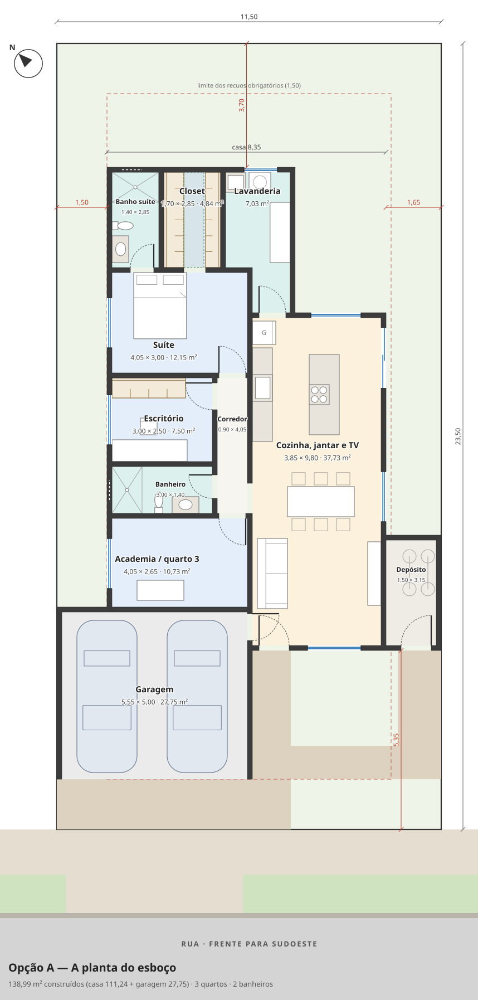
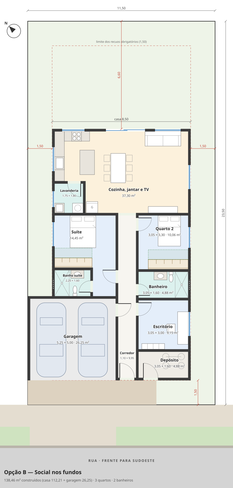
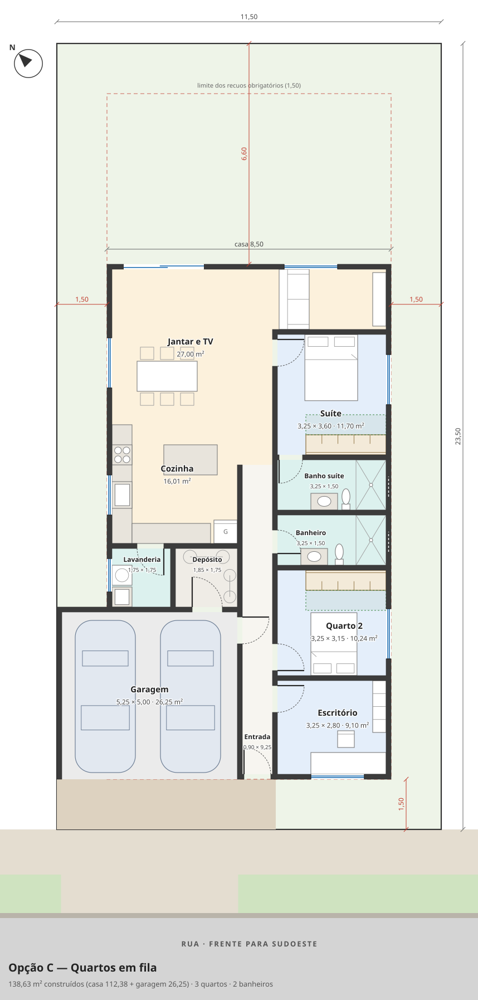
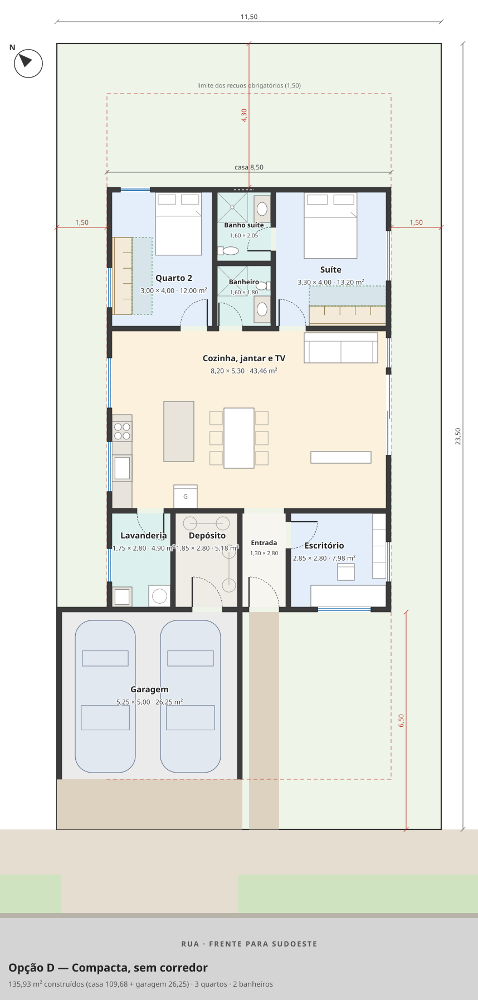
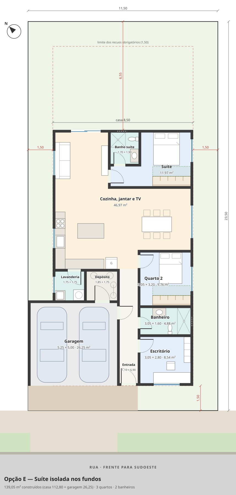
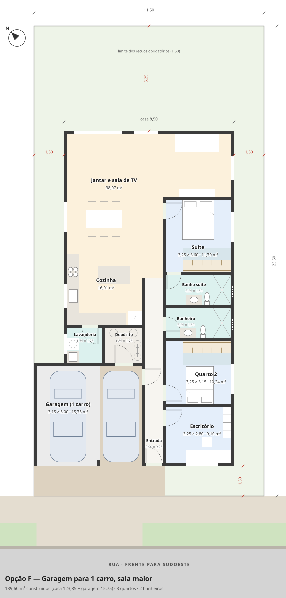

Opções de planta da casa
Estudos de planta baixa para o lote de 11,50 × 23,50 m (270,25 m²). Toque numa opção para ver a planta grande, com as medidas, as áreas e o que ela atende. Para escolher, basta dizer a letra (ex.: “gostei da A”).
O que todas as opções seguem
- No máximo 140 m² construídos, contando a garagem coberta para 2 carros.
- 2 banheiros, sendo 1 suíte; 2 ou 3 quartos, um deles escritório (que pode virar quarto).
- Depósito para bicicletas e objetos pesados, de preferência na frente.
- Lavanderia dentro de casa, de preferência ao lado da cozinha.
- Guarda-roupa de pelo menos 2,30 m com espaço livre para portas de abrir (faixa verde tracejada na planta).
- Cozinha integrada com a sala de jantar e a sala de TV.
Regras do condomínio e sol
- Recuos de 1,50 m na frente, no fundo e nas laterais (linha vermelha tracejada).
- A garagem pode encostar na divisa lateral até 6,00 m depois do recuo da frente; um único cômodo de até 3,50 m também pode encostar.
- A frente do lote fica para o sudoeste (sol da tarde). Os fundos ficam para o nordeste, o melhor lado para salas e quartos (sol da manhã e do inverno).
socialquartosbanheiros e lavanderiadepósitogaragem
As opções

Opção A — A planta do esboço
O arranjo do esboço (v3) com medidas reais. Sala, jantar e cozinha num salão comprido no lado direito; quartos, academia e banheiro em fila no lado esquerdo; suíte com closet nos fundos; depósito encostado na divisa, com porta para a frente.
138,99 m²3 quartos2 banheiros
O arranjo do esboço (v3) com medidas reais. Sala, jantar e cozinha num salão comprido no lado direito; quartos, academia e banheiro em fila no lado esquerdo; suíte com closet nos fundos; depósito encostado na divisa, com porta para a frente.
138,99 m²3 quartos2 banheiros

Opção B — Social nos fundos
Um corredor central leva da entrada à área social, que ocupa toda a largura dos fundos (nordeste) num ambiente único de cozinha, jantar e TV. A suíte fica atrás da garagem; escritório, banheiro e quarto 2 do outro lado do corredor.
138,46 m²3 quartos2 banheiros
Um corredor central leva da entrada à área social, que ocupa toda a largura dos fundos (nordeste) num ambiente único de cozinha, jantar e TV. A suíte fica atrás da garagem; escritório, banheiro e quarto 2 do outro lado do corredor.
138,46 m²3 quartos2 banheiros

Opção C — Quartos em fila
Os três quartos ficam em sequência no lado sudeste, com sol da manhã; cozinha, jantar e estar formam um L no lado noroeste e nos fundos, abrindo para o quintal.
138,63 m²3 quartos2 banheiros
Os três quartos ficam em sequência no lado sudeste, com sol da manhã; cozinha, jantar e estar formam um L no lado noroeste e nos fundos, abrindo para o quintal.
138,63 m²3 quartos2 banheiros

Opção D — Compacta, sem corredor
A casa é um retângulo simples atrás da garagem, dividido em três faixas — serviço e escritório na frente, sala integrada no meio e quartos nos fundos, voltados para o quintal. Sem corredor, sobra área e a obra fica menor (cerca de 135 m²).
135,93 m²3 quartos2 banheiros
A casa é um retângulo simples atrás da garagem, dividido em três faixas — serviço e escritório na frente, sala integrada no meio e quartos nos fundos, voltados para o quintal. Sem corredor, sobra área e a obra fica menor (cerca de 135 m²).
135,93 m²3 quartos2 banheiros

Opção E — Suíte isolada nos fundos
A suíte fica sozinha no canto dos fundos (nordeste + sudeste), com antessala e vista para o quintal, longe da rua e dos outros quartos. Escritório, banheiro e quarto 2 ficam perto da entrada; cozinha, jantar e TV formam um L no meio da casa.
139,05 m²3 quartos2 banheiros
A suíte fica sozinha no canto dos fundos (nordeste + sudeste), com antessala e vista para o quintal, longe da rua e dos outros quartos. Escritório, banheiro e quarto 2 ficam perto da entrada; cozinha, jantar e TV formam um L no meio da casa.
139,05 m²3 quartos2 banheiros

Opção F — Garagem para 1 carro, sala maior
Igual à opção C (quartos em fila no lado sudeste), mas só uma vaga é coberta; a outra fica descoberta (pode ter pergolado). Os ~11 m² economizados viram sala — a sala de TV ganha 1,35 m de profundidade.
139,60 m²3 quartos2 banheiros
Igual à opção C (quartos em fila no lado sudeste), mas só uma vaga é coberta; a outra fica descoberta (pode ter pergolado). Os ~11 m² economizados viram sala — a sala de TV ganha 1,35 m de profundidade.
139,60 m²3 quartos2 banheiros
Comparação
| Opção | Total | Casa | Garagem | Social | Quartos | Quintal (fundo) | Destaque |
|---|---|---|---|---|---|---|---|
| A — A planta do esboço | 138,99 | 111,24 | 27,75 | 37,73 | 3 | 3,70 m | Mantém o arranjo que já foi pensado, agora com medidas que fecham |
| B — Social nos fundos | 138,46 | 112,21 | 26,25 | 37,30 | 3 | 6,60 m | Cozinha, jantar e TV num só ambiente de 8,20 m de largura, todo voltado para o quintal (nordeste) |
| C — Quartos em fila | 138,63 | 112,38 | 26,25 | 43,01 | 3 | 6,60 m | Quartos todos com janela para o sudeste (sol da manhã, mais frescos à tarde) |
| D — Compacta, sem corredor | 135,93 | 109,68 | 26,25 | 43,46 | 3 | 4,30 m | A menor área construída das opções (~5 m² a menos que o limite), com forma retangular e telhado simples — a mais barata de construir |
| E — Suíte isolada nos fundos | 139,05 | 112,80 | 26,25 | 46,97 | 3 | 6,55 m | Suíte bem reservada, com antessala, sol da manhã e janela para o quintal |
| F — Garagem para 1 carro, sala maior | 139,60 | 123,85 | 15,75 | 54,08 | 3 | 5,25 m | Sala de TV de verdade (3,40 × 3,15) atrás da suíte, separada do jantar |